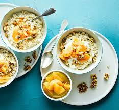

Vanilla & cinnamon breakfast rice

Description
Fancy a change from porridge? This healthy rice-based vanilla and cinnamon
breakfast is topped with apricots and walnuts, and will fill you up for the morning.
Ingredients
- 200g wholemeal basmati rice
- 200ml whole milk
- 2 tsp vanilla extract
- 3 bay leaves
- 1 cinnamon stick
- 12 dried apricots split in half widthways (so they still look whole)
- 4 x 100ml pots bio yogurt
- 12 walnut halves, broken into pieces
Method
- Tip the rice into a large, deep non-stick pan with 600ml water, the milk, vanilla, bay leaves and cinnamon stick. Bring to the boil, then cover with a lid and simmer for 25-30 mins until the rice is tender. Keep an eye on it to ensure it doesn’t boil dry towards the end of its cooking time.
- Meanwhile, tip the apricots into a small pan with 300ml water and cook over a low-medium heat until tender, about 10-15 mins. Set aside.
- Remove the bay leaves and cinnamon stick from the rice, then stir in half the yogurt. Both the rice and the apricots will keep chilled, separately, for up to 24 hrs. Spoon the rice into bowls and top with the remaining yogurt, the apricots and their juices and the walnuts. If you’ve prepared the rice and apricots the day before, eat cold or reheat until warm, adding a splash of milk to the rice to loosen.